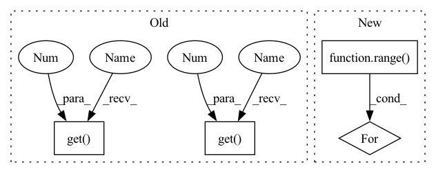

Pattern ID :33369
Before Change
super().__init__(env, args, action_length)
self.input_size = env.observation().shape
layers, filters = args.get( "layers", 3 ) , args.get( "filters", 32 )
internal_size = (filters, *self.input_size[1:])
self.encoder = Encoder(self.input_size, filters)
self.body = DRCCore(layers, filters, filters)After Change
self.num_layers = num_layers
blocks = []
for _ in range( self.num_layers):
blocks.append(ConvLSTMCell(
input_dim=input_dim,
hidden_dim=hidden_dim,
kernel_size=(kernel_size, kernel_size),In pattern: SUPERPATTERN
Frequency: 3
Non-data size: 4
Instances Fragment ID: 96103064
Project Name: dena/handyrl
Commit Name: c2731f3af6293f7583d95d8546e41ef8c5bfc5af
Time: 2020-07-06
Author: a.a.b.a.b.c.a.b.c.d.abcd1234@gmail.com
File Name: model.py
M Class Name: DRC
N Class Name: DRC
M Method Name: __init__(6)
N Method Name: __init__(4)
M Parent Class: nn.Module
N Parent Class: BaseModel
M File Name: model.py
N File Name: model.py
M Start Line: 288
M End Line: 297
N Start Line: 188
N End Line: 200
Before Change
filename=os.path.join(self.videos_dir, video_name.replace(".yuv", ".mp4"))
video_capture = cv2.VideoCapture()
video_capture.open(filename)
cap=cv2.VideoCapture(filename)
video_channel = 3
video_height_crop = 448
video_width_crop = 448
video_height = int(cap.get(cv2.CAP_PROP_FRAME_HEIGHT))
video_width = int(cap.get(cv2.CAP_PROP_FRAME_WIDTH))
video_length = int(cap.get(cv2.CAP_PROP_FRAME_COUNT))
video_length_read = 5
transformed_video = torch.zeros([video_length_read, video_channel, video_height_crop, video_width_crop])
frame_idx = 0
frame_ts = video_capture.get(0 )
for i in range(video_length):
// the current time: ms
last_ts = video_capture.get(0 )
has_frames, frame = video_capture.read()
if last_ts >= frame_ts and frame_idx < video_length_read:
if frame_idx <= video_length_read:After Change
frame_idx += 1
if video_read_index < video_length_read:
for i in range( video_read_index, video_length_read):
transformed_video[i] = transformed_video[video_read_index - 1]
video_capture.release()
video[i_type] = transformed_video Fragment ID: 96103054
Project Name: sunwei925/compressedvqa
Commit Name: 09b7b06f419c50f543d05799599f367bfc40e56d
Time: 2022-05-09
Author: sunwei925@163.com
File Name: data_loader.py
M Class Name: VideoDataset_FR
N Class Name: VideoDataset_FR
M Method Name: __getitem__(2)
N Method Name: __getitem__(2)
M Parent Class: data.Dataset
N Parent Class: data.Dataset
M File Name: data_loader.py
N File Name: data_loader.py
M Start Line: 123
M End Line: 157
N Start Line: 137
N End Line: 164
Before Change
filename=os.path.join(self.videos_dir, video_name.replace(".yuv", ".mp4"))
video_capture = cv2.VideoCapture()
video_capture.open(filename)
cap=cv2.VideoCapture(filename)
video_channel = 3
video_height_crop = 448
video_width_crop = 448
video_height = int(cap.get(cv2.CAP_PROP_FRAME_HEIGHT))
video_width = int(cap.get(cv2.CAP_PROP_FRAME_WIDTH))
video_length = int(cap.get(cv2.CAP_PROP_FRAME_COUNT))
video_length_read = 10
transformed_video = torch.zeros([video_length_read, video_channel, video_height_crop, video_width_crop])
frame_idx = 0
frame_ts = video_capture.get(0 )
for i in range(video_length):
// the current time: ms
last_ts = video_capture.get(0 )
has_frames, frame = video_capture.read()
if last_ts >= frame_ts and frame_idx < video_length_read:
if frame_idx <= video_length_read:After Change
frame_idx += 1
if video_read_index < video_length_read:
for i in range( video_read_index, video_length_read):
transformed_video[i] = transformed_video[video_read_index - 1]
video_capture.release()
Fragment ID: 96103053
Project Name: sunwei925/compressedvqa
Commit Name: 09b7b06f419c50f543d05799599f367bfc40e56d
Time: 2022-05-09
Author: sunwei925@163.com
File Name: data_loader.py
M Class Name: VideoDataset_NR
N Class Name: VideoDataset_NR
M Method Name: __getitem__(2)
N Method Name: __getitem__(2)
M Parent Class: data.Dataset
N Parent Class: data.Dataset
M File Name: data_loader.py
N File Name: data_loader.py
M Start Line: 45
M End Line: 79
N Start Line: 55
N End Line: 82
Before Change
super().__init__(env, args, action_length)
self.input_size = env.observation().shape
layers, filters = args.get( "layers", 3 ) , args.get( "filters", 32 )
internal_size = (filters, *self.input_size[1:])
self.encoder = Encoder(self.input_size, filters)
self.body = DRCCore(layers, filters, filters)After Change
self.num_layers = num_layers
blocks = []
for _ in range( self.num_layers):
blocks.append(ConvLSTMCell(
input_dim=input_dim,
hidden_dim=hidden_dim,
kernel_size=(kernel_size, kernel_size), Fragment ID: 96103057
Project Name: dena/handyrl
Commit Name: c2731f3af6293f7583d95d8546e41ef8c5bfc5af
Time: 2020-07-06
Author: a.a.b.a.b.c.a.b.c.d.abcd1234@gmail.com
File Name: model.py
M Class Name: DRC
N Class Name: DRC
M Method Name: __init__(6)
N Method Name: __init__(4)
M Parent Class: nn.Module
N Parent Class: BaseModel
M File Name: model.py
N File Name: model.py
M Start Line: 288
M End Line: 297
N Start Line: 188
N End Line: 200